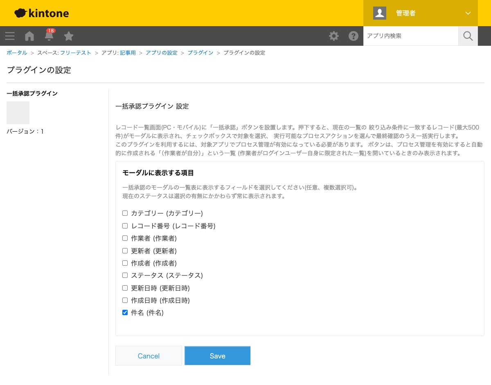
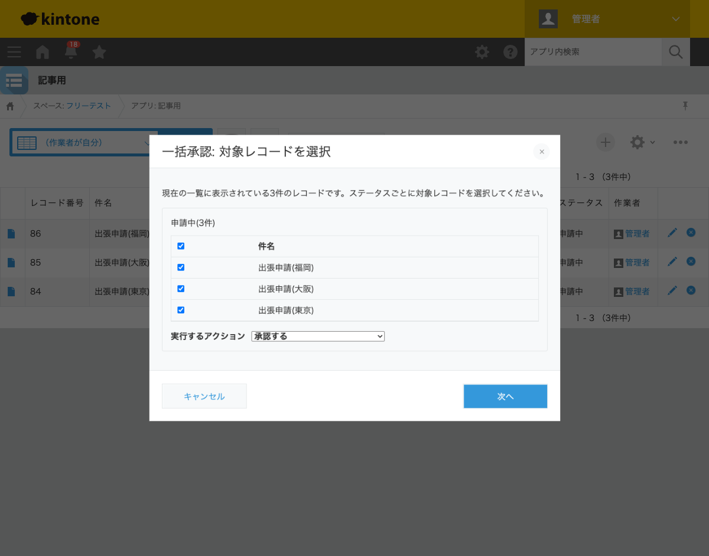
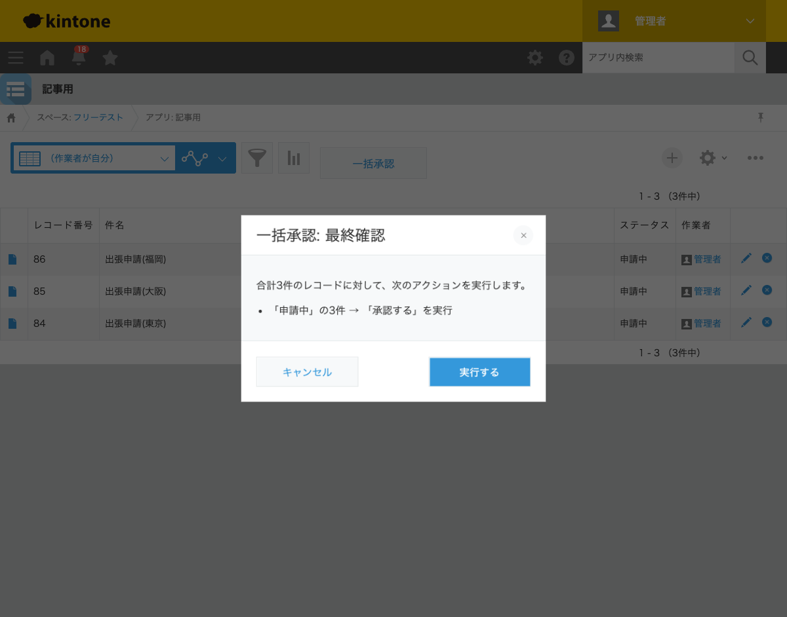
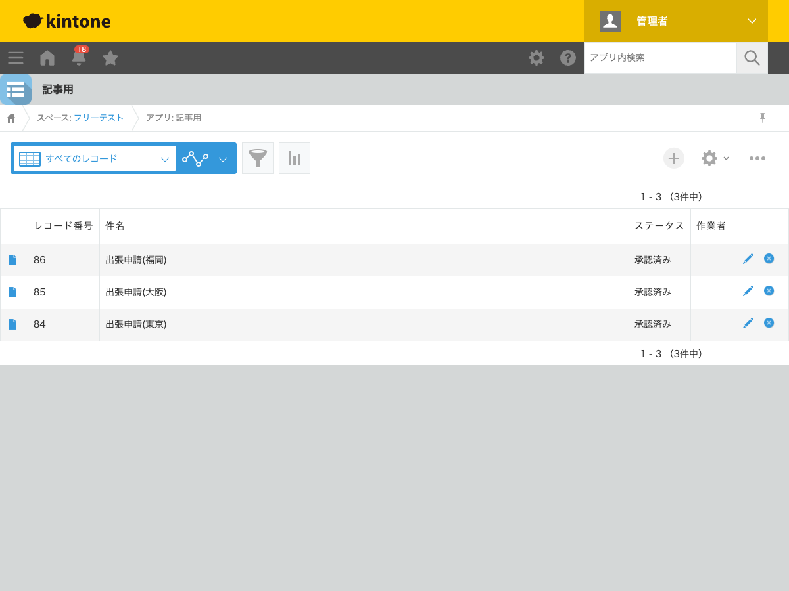

GovAppsプラグイン 安全性を確認できる無料kintoneプラグイン集
プロセス管理を使った申請・承認フローでは、「（作業者が自分）」一覧に自分が処理すべき申請が 何件も並ぶことがあります。1件ずつ開いてプロセスアクションのボタンを押すのは手間がかかり、 件数が多いほど負担が増えます。この記事では、一覧に並ぶ複数の申請をチェックボックスで選んで まとめて承認する方法を、実際の設定画面と実行結果つきで解説します。
kintoneのプロセス管理には、レコード詳細画面でアクション(「承認する」等)を実行する標準機能が あります。しかしこれは1レコードずつの操作で、一覧画面からチェックした複数レコードをまとめて 同じアクションで進める機能は標準にはありません。申請件数が多い部署では、承認担当者が同じボタンを 何度も押す作業が発生します。JavaScriptカスタマイズを自作すれば実現できますが、ステータスごとに 実行可能なアクションを判定し、作業者以外が実行できないアクションを除外する処理などを自前で 書く必要があり、簡単な作業ではありません。
「一覧の複数レコードをまとめて承認する」機能を用意する方法は、大きく4つあります。それぞれの 向き不向きをまとめました。
| 方法 | 向いている場合 | 注意点 |
|---|---|---|
| kintone標準機能のみ | 申請件数が少なく、1件ずつの承認でも十分な場合 | 件数が増えるほど同じ操作の繰り返しが負担になる |
| JavaScriptを自作する | 社内に開発者がいて、独自の承認フローが必要な場合 | ステータス・作業者判定の実装・保守が必要。担当者の異動時に引き継ぎコストがかかる |
| 有料の他社プラグイン | 予算があり、手厚いサポートを求める場合 | 月額課金が発生する。ソースコードが非公開で、外部通信の有無を利用者側で確認しにくいことが多い |
| GovAppsプラグイン(このプラグイン) | 無料で試したい、社内・庁内でセキュリティを確認してから導入したい場合 | 機能追加の要望はGitHub Issueベース(個別カスタマイズの請負は行っていない) |
GovAppsのプラグインはすべて無料・広告なしで、追加課金なしで使い続けられます。 ソースコードはGitHubで全公開しているオープンソースなので、 「本当に外部と通信していないか」「入力値をどう扱っているか」を自治体・企業のセキュリティ担当者 自身の目で確認できます(このプラグインも個別ページにセキュリティレビュー結果を掲載しています)。
一括承認プラグインは、プロセス管理が有効なアプリの 「（作業者が自分）」一覧にだけボタンを表示します。設定はこの1ステップです。

「（作業者が自分）」一覧を開いて「一括承認」ボタンを押すと、一覧に表示されている全レコードが 現在のステータスごとにセクション分けされたモーダルが開きます。今回は3件とも「申請中」ステータス だったため、1セクションにまとまって表示されました。セクションごとに、チェックボックスで対象を 選び、そのステータスから実行できるアクション(ここでは「承認する」)をドロップダウンから選びます。

「次へ」を押すと、実行内容を見直す最終確認画面が表示されます。「実行する」を押すと、 チェックした3件すべてが同時に「承認する」アクションで次のステータスへ進みます。

実行後、3件のステータスがすべて「承認済み」に変わりました。ステータスが変わると作業者も 次のステータスの設定に従って変わるため、承認済みレコードは「（作業者が自分）」一覧からは 自然に外れます(下図は絞り込みなしの一覧で確認した結果です)。

もし「未処理」と「申請中」のレコードが混在する一覧でボタンを押した場合は、モーダルに 「未処理(◯件)」「申請中(◯件)」のように複数のセクションが並び、セクションごとに異なる アクションを選んで、1回の実行操作でまとめて処理できます。